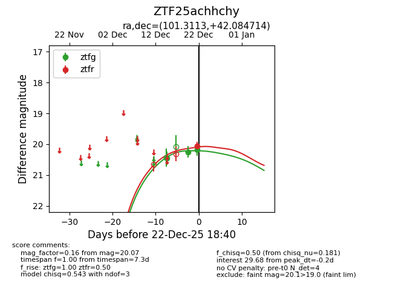
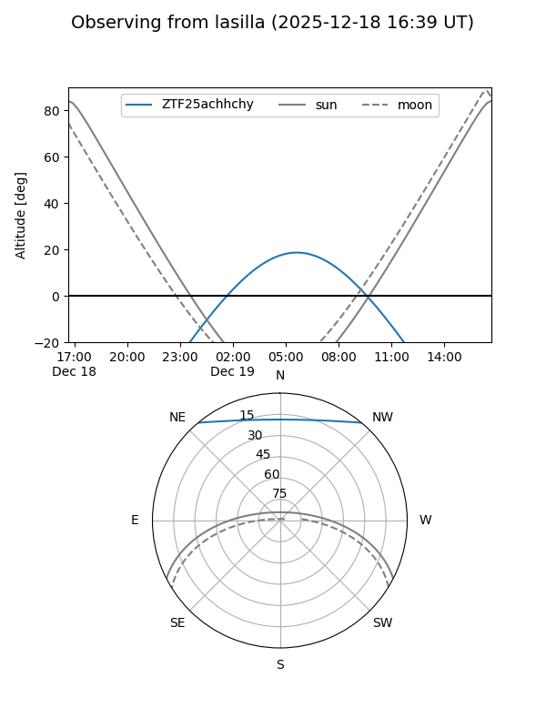
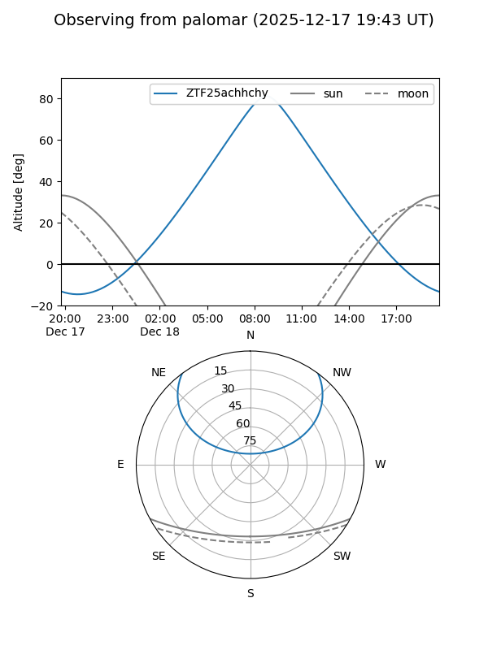

ZTF25achhchy
Target ZTF25achhchy at 2025-12-18 11:18
Aliases and brokers:
FINK: fink-portal.org/ZTF25achhchy
Lasair: lasair-ztf.lsst.ac.uk/objects/ZTF25achhchy
ALeRCE: alerce.online/object/ZTF25achhchy
alt names
ZTF25achhchy (ztf,fink_ztf)
Coordinates:
equatorial (ra, dec) = 101.3113,+42.08471
equatorial (HMS+DMS) = 06:45:14.70,+42:05:04.97
galactic (l, b) = (173.7054,+16.72435)
Photometry
last ztfg=20.45
1 ztfg detections
Lightcurve

Visibility


Additional plots